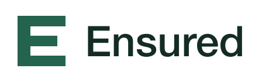
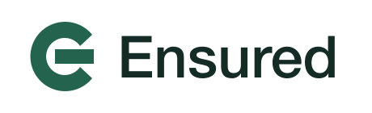

Open E

A compact E with open channels: clarity, access, and a strong app icon.
Download SVGShared Ground
Two equal participants meeting on common ground.
Download SVGKeystone
An architectural arch suggesting support and dependable capacity.
Download SVGMutual
Two complementary forms make a single balanced mark.
Download SVGContinuity

A circular E expressing continuous coverage and movement.
Download SVG